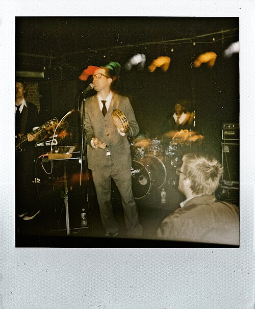
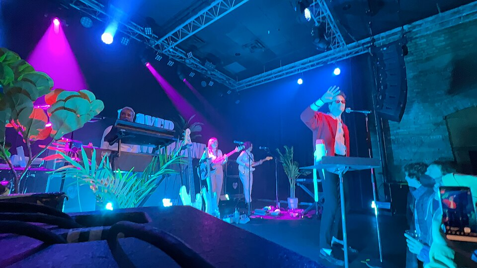

Chapter one
Biography
Mayer Hawthorne, born Andrew Mayer Cohen in Ann Arbor, Michigan, is a singer, songwriter, and producer known for bringing classic soul music into a modern era. Growing up with a deep appreciation for vintage sounds, he was influenced by Motown, funk, and old-school R&B, which would later shape his signature style.
Before stepping into the spotlight as a vocalist, Hawthorne started out as a producer and DJ. His breakthrough came when he began recording his own songs using live instrumentation and analog-inspired techniques, creating music that felt warm, nostalgic, and authentic. This approach helped him stand out in a music industry dominated by digital production.
Over time, Mayer Hawthorne built a reputation for blending smooth vocals with polished production, bridging the gap between past and present. Through both his solo work and collaborations like Tuxedo, he has helped introduce a new generation of listeners to the groove, style, and energy of classic soul music.
Side A
Music & Contributions
Before the spotlight, Hawthorne was a Michigan DJ who came up as DJ Haircut in the group Athletic Mic League. He moved to Los Angeles in 2005 and signed with Stones Throw Records, which put out his early singles and his first album, A Strange Arrangement, in 2009.
His solo albums run from A Strange Arrangement (2009) through How Do You Do (2011), Where Does This Door Go (2013), Man About Town (2016) and Rare Changes (2020) to For All Time (2023). How Do You Do earned a Grammy nomination for Best Boxed or Special Limited Edition Package, and Where Does This Door Go brought in production from Pharrell Williams and others.
He also records as Tuxedo, a duo with producer Jake One, whose albums include Tuxedo (2015), Tuxedo II (2017), Tuxedo III (2019) and Tuxedo IV (2024).
His songs have also reached the screen, appearing in shows such as Ugly Betty, Masters of Sex, Dear White People and Fringe, and he has toured with artists including Bruno Mars and Erykah Badu.
Spin it
Discography
Six solo albums and a side project, from the first single to the latest record. Press play, then dig through the crate.
Solo albums
- 2009A Strange Arrangement
- 2011How Do You Do
- 2013Where Does This Door Go
- 2016Man About Town
- 2020Rare Changes
- 2023For All Time
With Jake One as Tuxedo
- 2015Tuxedo
- 2017Tuxedo II
- 2019Tuxedo III
- 2024Tuxedo IV
The look
Style & Image
Mayer Hawthorne’s style and image are a major part of his identity as an artist. He presents himself with a polished, vintage-inspired look that reflects the sound of his music. From tailored suits to retro color palettes, his visual aesthetic draws heavily from classic soul and funk eras, creating a cohesive experience for listeners.
What makes his image stand out is how closely it matches his music. The smooth, refined visuals mirror the tone of his songs, making his brand feel intentional and authentic. This consistency helps strengthen his connection with his audience, as fans are not only drawn to the sound, but also to the overall vibe he creates.
By combining modern production with a classic visual style, Mayer Hawthorne has built a recognizable identity that blends past and present. His attention to both sound and appearance shows how important visual storytelling can be in shaping an artist’s impact.
-

01 2009 · The early daysPhoto by Slava, CC BY 2.0
-
02 Red suit, blue lightPhoto by Julio Enriquez, CC BY 2.0
-
03 2016 · Bow tie & tambourinePhoto by Kaiography, CC BY-SA 4.0
-
04 2021 · Cardigan seasonPhoto by erintheredmc, CC BY 2.0
-

05 The whole bandPhoto by erintheredmc, CC BY 2.0
On screen
Music Videos
Liner notes
References
Photo credits
Photographs are from Wikimedia Commons and used under the licenses shown. Each photo credit is also shown next to its image.
- Hero image — erintheredmc, CC BY 2.0
- Biography — Kaiography, CC BY-SA 4.0
- Music & Contributions — Kaiography, CC BY-SA 4.0
- Lookbook 01 — Slava, CC BY 2.0
- Lookbook 02 — Julio Enriquez, CC BY 2.0
- Lookbook 03 — Kaiography, CC BY-SA 4.0
- Lookbook 04 — erintheredmc, CC BY 2.0
- Lookbook 05 — erintheredmc, CC BY 2.0
Photos were resized for the web. Licenses: CC BY 2.0, CC BY-SA 4.0.